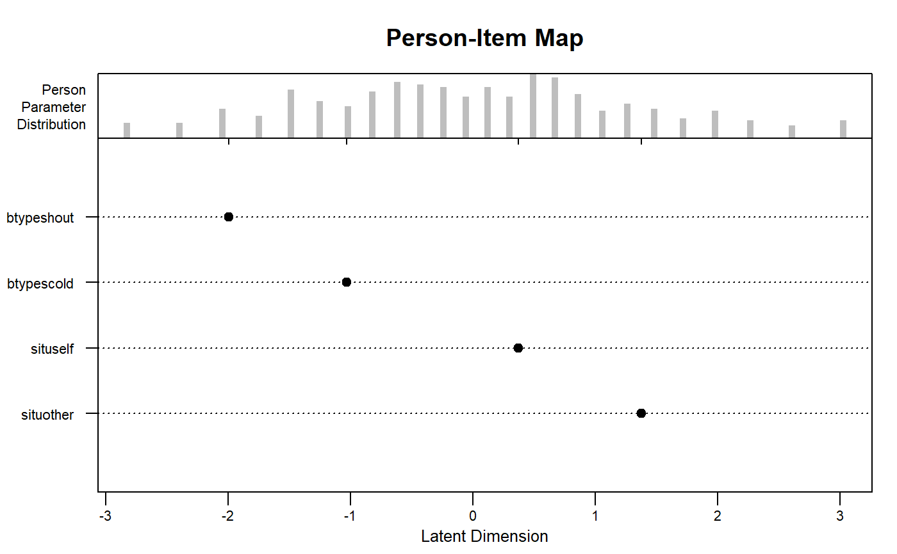
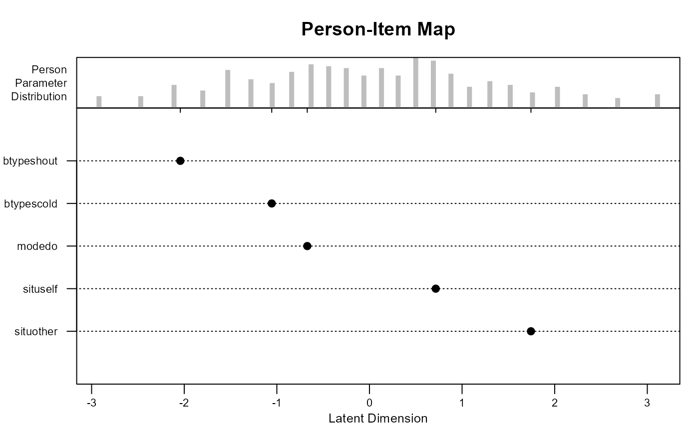

eirm.RdThe eirm function estimates explanatory item response models with item-related and
person-related covariates. The function requires the data to be in a long format where
items are nested within persons. If item responses are polytomous, then the data has to
be reformatted using the polyreformat) function.
eirm(formula, data, na.action = "na.omit", weights = NULL, control = glmerControl(optimizer = "optimx", calc.derivs = FALSE, optCtrl = list(method = "nlminb", starttests = FALSE, kkt = FALSE)))
| formula | A regression-like formula that defines item responses as a dependent variable and explanatory predictors as independent predictors. For example, "response ~ -1 + predictor1 + predictor2". Use -1 in the formula to avoid the estimation of an intercept parameter. |
|---|---|
| data | A data frame in a long format where there are multiple rows for each person (i.e., nested data). The data should involve a variable that represents item responses, a variable that represents persons, and additional predictors to be used for 'explaining' item responses. |
| na.action | How missing data should be handled (default: "na.omit"). |
| weights | Weights to be used in the estimation. |
| control | Control settings for the glmer function in lme4. Note that the optimx package is used by default to speed up the estimation. For higher accuracy in the results, the default lme4 optimizers can be used. |
An eirm-class list that includes the EIRM formula used for the estimation, estimated parameters in the model, ability estimates for persons and other random effects (if any), and the complete set of results returned from the glmer function. These results can be used for further analysis and graphics based on lme4.
data("VerbAgg") mod0 <- eirm(formula = "r2 ~ -1 + situ + btype + (1|id)", data = VerbAgg) print(mod0) # To get easiness parameters#> EIRM formula: "r2 ~ -1 + situ + btype + (1|id)" #> #> Number of persons: 316 #> #> Number of observations: 7584 #> #> Number of predictors: 4 #> #> Parameter Estimates: #> #> Easiness S.E. z-value p-value #> situother 1.376 0.0941 14.62 2.06e-48 #> situself 0.371 0.0913 4.06 4.85e-05 #> btypescold -1.031 0.0671 -15.35 3.32e-53 #> btypeshout -1.996 0.0718 -27.80 4.19e-170 #> #> Note: The estimated parameters above represent 'easiness'. #> Use difficulty = TRUE to get difficulty parameters.#> EIRM formula: "r2 ~ -1 + situ + btype + (1|id)" #> #> Number of persons: 316 #> #> Number of observations: 7584 #> #> Number of predictors: 4 #> #> Parameter Estimates: #> #> Difficulty S.E. z-value p-value #> situother -1.376 0.0941 14.62 2.06e-48 #> situself -0.371 0.0913 4.06 4.85e-05 #> btypescold 1.031 0.0671 -15.35 3.32e-53 #> btypeshout 1.996 0.0718 -27.80 4.19e-170 #> #> Note: The estimated parameters above represent 'difficulty'.plot(mod0)mod1 <- eirm(formula = "r2 ~ -1 + situ + btype + mode + (1|id)", data = VerbAgg) print(mod1) # To get easiness parameters#> EIRM formula: "r2 ~ -1 + situ + btype + mode + (1|id)" #> #> Number of persons: 316 #> #> Number of observations: 7584 #> #> Number of predictors: 5 #> #> Parameter Estimates: #> #> Easiness S.E. z-value p-value #> situother 1.744 0.1015 17.19 3.29e-66 #> situself 0.716 0.0978 7.32 2.43e-13 #> btypescold -1.055 0.0680 -15.51 3.02e-54 #> btypeshout -2.042 0.0729 -28.00 1.51e-172 #> modedo -0.672 0.0562 -11.95 6.69e-33 #> #> Note: The estimated parameters above represent 'easiness'. #> Use difficulty = TRUE to get difficulty parameters.#> EIRM formula: "r2 ~ -1 + situ + btype + mode + (1|id)" #> #> Number of persons: 316 #> #> Number of observations: 7584 #> #> Number of predictors: 5 #> #> Parameter Estimates: #> #> Difficulty S.E. z-value p-value #> situother -1.744 0.1015 17.19 3.29e-66 #> situself -0.716 0.0978 7.32 2.43e-13 #> btypescold 1.055 0.0680 -15.51 3.02e-54 #> btypeshout 2.042 0.0729 -28.00 1.51e-172 #> modedo 0.672 0.0562 -11.95 6.69e-33 #> #> Note: The estimated parameters above represent 'difficulty'.plot(mod1)